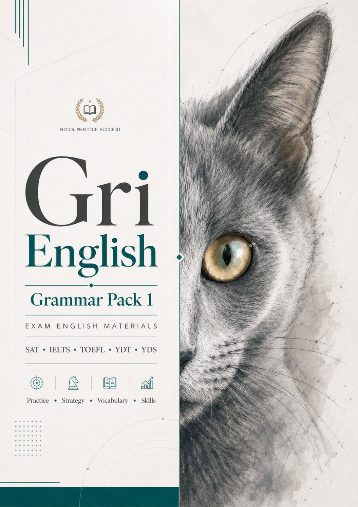
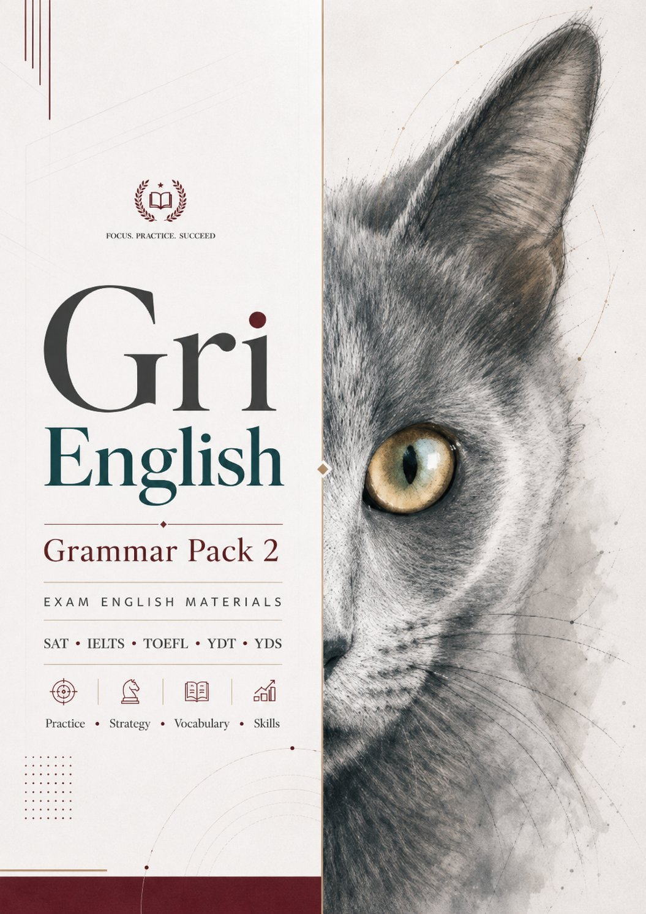
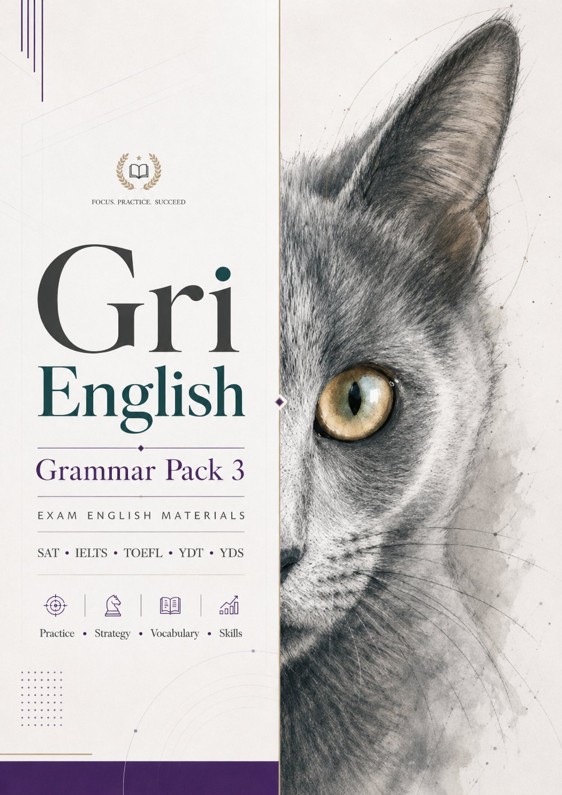
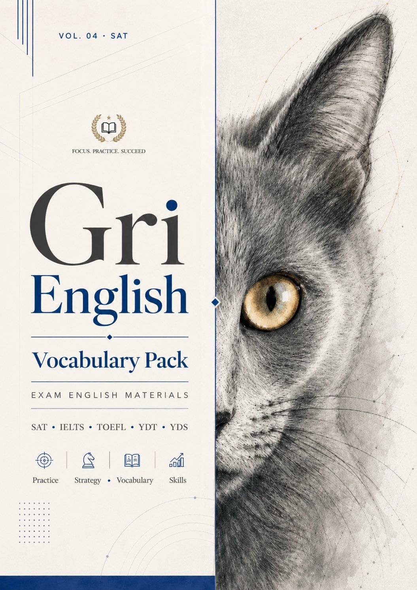

Digital SAT Reading & Writing'in dilbilgisi sorularına odaklanan 10 setlik (250 soru) pratik paketi. Cümle sınırları, virgül ve noktalama, özne-yüklem uyumu, zamir referansı, modifier yerleşimi, paralel yapı, fiil zamanları ve relative clause konularını kapsar.
Ödeme onaylandıktan sonra giriş bilgileri (kullanıcı adı ve şifre) e-posta ile gönderilir. Materyale tarayıcıdan erişilir, indirme gerekmez.
IELEV Lisesi İngilizce ve IB English B öğretmeni, Yeditepe Üniversitesi ELT yüksek lisans öğrencisi. Yıllardır Digital SAT, IELTS, TOEFL ve YDT öğrencileri hazırlıyor.
Daha Fazlası
Grammar Pack 1'in devamı niteliğinde, aynı dilbilgisi konularını farklı bağlamlarda işleyen ikinci pratik havuzu. Pack 1...

Üçüncü ve son grammar pratik havuzu. Daha zorlu soru tipleri ve karışık konu setleriyle sınav öncesi tam pekiştirme amaç...

Digital SAT'in "Words in Context" sorularına odaklı 250 soruluk pratik havuzu. Akademik bağlamda kelime seçimi, çok anla...